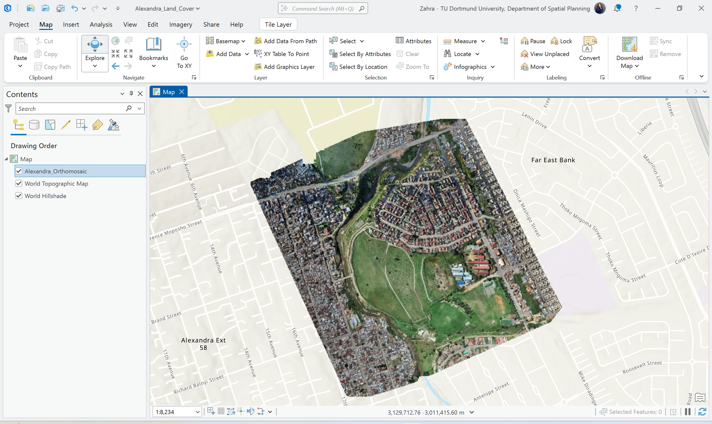
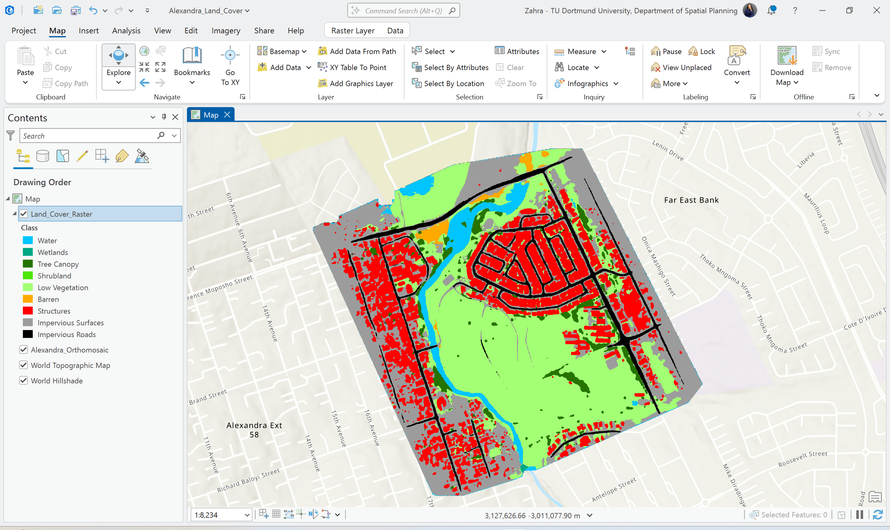
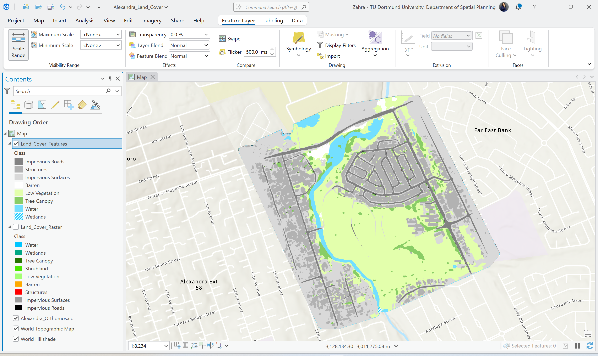
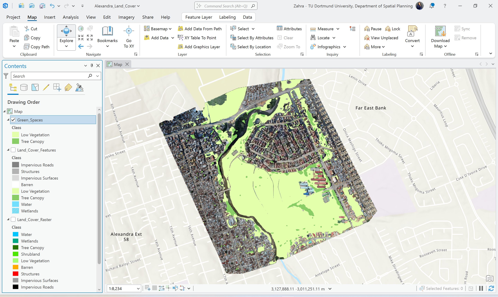

More than a model output
This project shows that the classified raster was not treated as a final answer. Instead, it was refined and translated into clearer GIS layers for later use and communication.
This project focused on GeoAI-based land cover classification using high-resolution imagery, followed by raster refinement, vector conversion, thematic filtering, and web-based presentation. The workflow moved from raw model output to cleaner GIS-ready layers that support interpretation and targeted analysis.
From a recruiter or GIS analyst perspective, the main value of this project is not only that a land cover map was produced. The stronger signal is that the workflow continued beyond raw classification and demonstrated raster interpretation, vector refinement, thematic extraction, and presentation-ready output preparation.
This project shows that the classified raster was not treated as a final answer. Instead, it was refined and translated into clearer GIS layers for later use and communication.
The workflow moved from pixel-based classification to vector-style interpretation and class filtering, which is an important signal of post-processing skill.
One of the clearest applied outputs is the extraction of vegetation-related classes into a separate green space layer, making the result more focused and interpretable.
The skills below are tied directly to the workflow shown on this page. The emphasis is on segmentation output handling, post-processing, and transformation into more analysis-ready products.
The workflow below highlights the main technical stages instead of simply retelling the tutorial. This makes the logic easier to review quickly.
The workflow started with high-resolution orthomosaic imagery used as the visual basis for land cover segmentation.
GeoAI was used to produce a raster-based classification containing multiple land cover classes across the study area.
The classified raster was translated into a cleaner land cover layer to improve interpretation, control, and presentation quality.
Vegetation-related classes were filtered into a focused green space layer and the outputs were delivered through an ArcGIS Online web app.
These visuals support the main technical stages: input imagery, raw classified raster, and refined land cover features. Each image is included to show process and transformation, not just final appearance.



The classified raster is useful, but the stronger portfolio signal comes from refining it into layers that are easier to interpret, manage, and reuse in later GIS work.
The most focused applied result in this project is the extraction of vegetation-related classes into a separate green space layer. This step turns a broad classification result into a more targeted thematic output.

The web app supports visual exploration of the classified layers and thematic outputs in a cleaner interface. It is included here to show how the technical workflow was translated into an accessible presentation format.
This project demonstrates a complete GeoAI workflow that combines image-based classification, raster refinement, vector-style output preparation, thematic filtering, and web-based communication. The main software signals are segmentation handling, post-processing, targeted class extraction, and presentation of cleaner GIS-ready outputs.